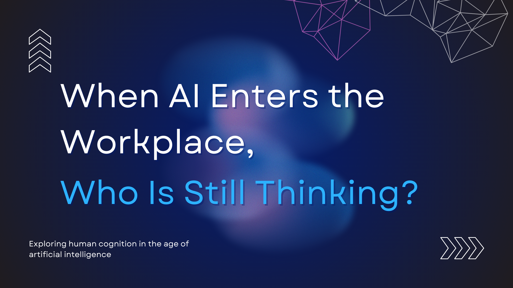
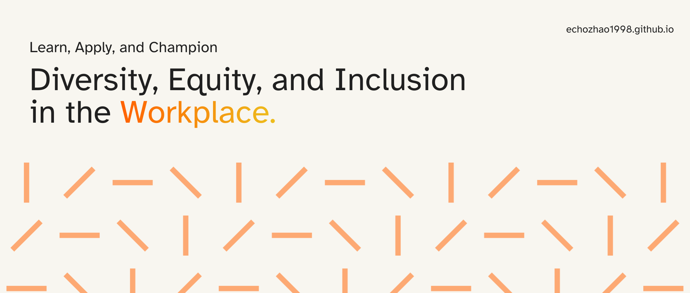
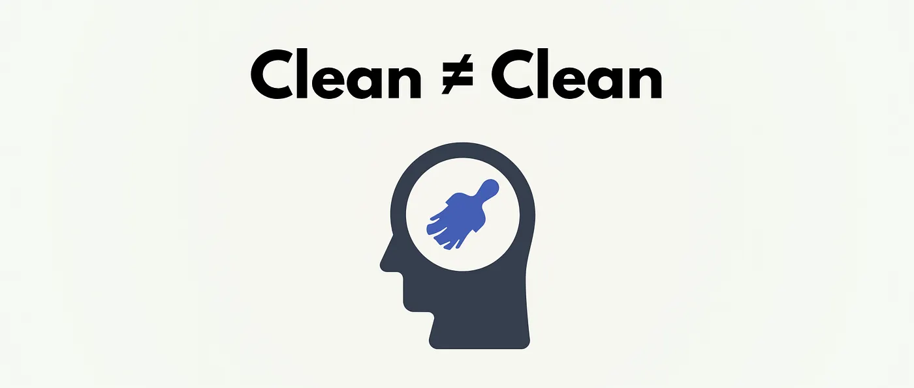

Blogs
A small selection of recent essays — pieces I want to point readers to first. Most also live on Medium. Chinese versions are usually on my WeChat Official Account (不二Talk).
-

When AI Enters the Workplace, Who Is Still Thinking?
If AI can now generate almost any artifact on demand, what exactly are we still holding humans accountable for inside our organizations — speed, or sense? Output, or understanding?
-
Involution Without Exit
We are building systems that grow ever more powerful, while shrinking the space in which human judgment can matter. We are optimizing faster than we are learning how to live inside what we have built. To see this clearly is already a form of resistance.
-

Why DEI Struggles to Show ROI — and What Research Can Actually Do
DEI doesn't fail because it lacks value. It fails because its value is rarely visible on short-term financial reports.
-
When Someone Pauses on a Sentence, Writing Has Already Worked
In a time when content is abundant and attention is scarce, careful reading is always the fuel for my writing.
-

AI Isn't the Threat, Ambiguity Is — and Only Leaders Who Understand This Will Win
Whenever markets become more uncertain, complex, or risky, the demand for human judgment increases.
-

Ignorance: I Live in a Trash Heap
We don't drown in what we lack — but in what we refuse to discard.
-

When a System Stops Serving People — Losing Hearing Wasn't the Hardest Part, Navigating the System Was
When a system sustains its procedures instead of serving people, it naturally evolves into a burden.
-
Why Being Organized Doesn't Mean Being Effective
We have never had so many tools designed to make us effective. And we have never felt so constantly behind.
-
Human'kind'? Rethinking Human Nature in the Quiet
People don't act worse because they are evil, but because systems bring out the worst in them.